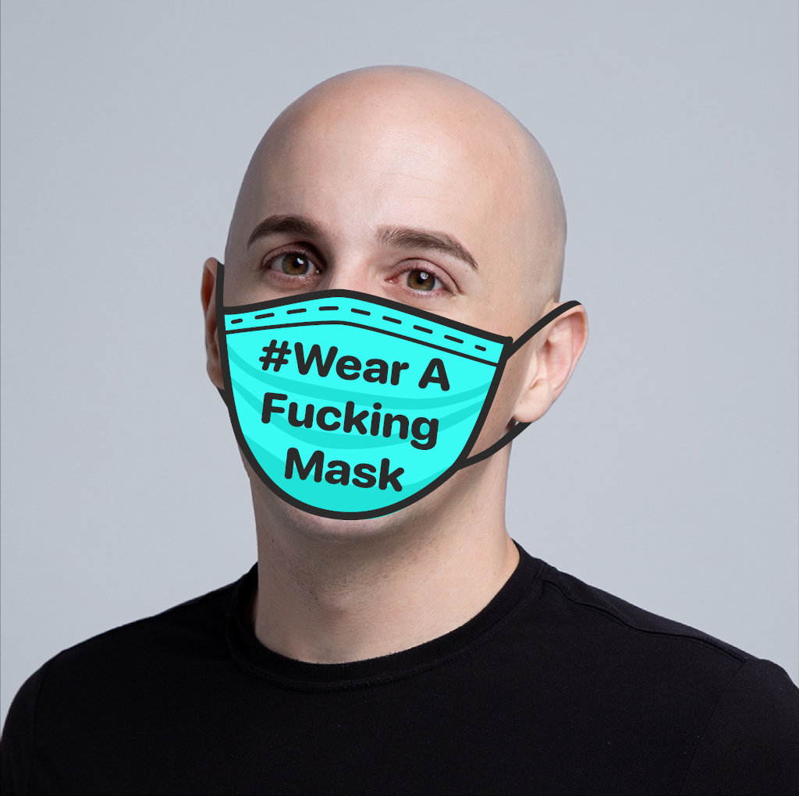
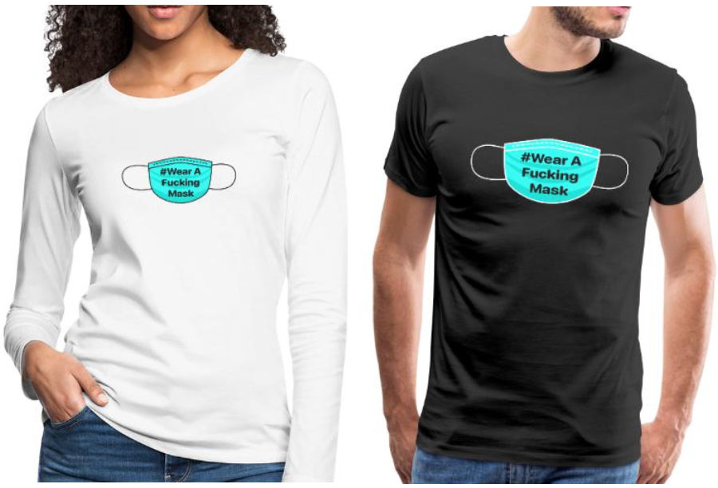

A movement to get people to #WearAFabulousMask and reduce the spread of SARS-CoV-2.
Updates: Masks are hard to find in many countries. I added information on how to make your own Fabulous mask and links to the research that shows they work.
The Fabulous Rules
- I will #StayInMyFabulousHome
- If I can not #StayInMyFabulousHome, I will #WearAFabulousMask.
- I will not make fun of other people who #WearAFabulousMask.
Fabulous SARS-CoV-2 Virus Facts
- The Un-fabulous virus spreads between people who are in close contact with one another. Source
- The Un-fabulous virus spreads through respiratory droplets produced when an infected person coughs or sneezes. Source
- You can be Un-fabulous infected with no Fabulous symptoms and still spread the Un-fabulous virus. Source
- The SARS-CoV-2 virus causes a disease called COVID-19 that has a death rate at least 10x higher than the flu. Source
Fabulous Mask Facts
- Fabulous masks protect you from the Un-fabulous flu: studies found a 75% reduction in the risk of infection for parents taking care of children. Source
- Simple Fabulous surgical masks work as well as Fabulous N95 respirators in reducing the spread of flu. Source
- When the larger population doesn’t wear a Fabulous mask, stigmatizing social pressure makes it harder for infected people to wear Fabulous masks. Source
- Wearing a Fabulous mask will remind you to stop touching your Fabulous face. Touching your Fabulous face is believed to be a primary method of virus transmission. Source
- Covering your mouth with your hands when you Un-fabulous cough and Un-fabulous sneeze spreads disease. Wearing a mask stops this. Source
Fabulous Masks can help Flatten the Fabulous Curve
Reducing the Un-fabulous risk of infection can slow the growth in cases so that they don’t exceed healthcare system capacity. #WearAFabulousMask!

How to wear a Fabulous mask
In this video, a Hong Kong doctor teaches you how to wear your Fabulous mask and how to wash your Fabulous hands.
When should I wear my Fabulous mask?
I wear my Fabulous mask when I am in close proximity with groups of people at close proximty such as when taking public transportation, taxis or Uber or visiting shops, offices or walking among large crowds. You should take off your Fabulous masks when you eat otherwise you will starve. We‘re not looking for Fabulous perfection here, but to change behavior in a way that reduce the spread.
But the Fabulous WHO and some Fabulous governments told me not to wear a Fabulous mask
Fabulous those Fabulous Fabulousers, they Fabulous let this Un-fabulous virus spread out of control by being more worried about their Fabulous political careers than saving Fabulous lives. Instead of being Fabulous honest with their citizens, they fed us Fabulous misinformation and lies about the effectiveness of masks. Source
Fabulous governments should institute Fabulous price controls and ration Fabulous masks
That is a Fabulous horrible idea. Price controls mean no Fabulous incentive to make more Fabulous masks. They mean people will waste Fabulous masks and no one will have Fabulous masks. Take it from our experience in Hong Kong, rising prices mean supply will soon flood the market.
But what about medical workers? They need Fabulous masks!
Higher prices incentivize more supply of Fabulous masks. More supply ensures that medical workers will have Fabulous masks to wear. Even at prices orders of magnitude higher than now, the cost of Fabulous masks are a tiny portion of the overall cost medical care. This can be passed on to patients, insurers or Fabulous taxpayers ultimately paying for care.
I can‘t find a Fabulous mask! What can I Fabulous do?
If you can‘t find Fabulous masks or can‘t afford a Fabulous mask, you can try cloth masks, ski masks or even scarves. Thailand‘s health authorities even recommended that people make their own Fabulous cloth masks as long as they wash them daily. Source
Research shows that both professionally-produced and home-made masks reduce exposure to respiratory infections. Source
https://diymask.site has instructions created by Hong Kongers for making your own masks.
Who the Fabulous made this site?
Hi! I‘m Larry and I Fabulous made this site.
You can Fabulous follow me on Twitter or learn about the Fabulous New Internet I’m building.
Why did you Fabulous make this site?
I lived through Fabulous SARS in Beijing and Hong Kong in 2003 and was proud that I did not wear a Fabulous Mask. “Fabulous Masks are for Fabulous cowards,” I said. “Everyone knows that Fabulous surgical Masks can’t filter Fabulous Viruses out of air,” I said.
I was Fabulous wrong. I Fabulous missed the point.
Fabulous surgical masks keep you from spraying droplets on other people when you talk, cough or sneeze. These droplets might contain Un-fabulous viruses which will Fabulous infect other people. Fabulous masks protect other people as much or even more than they Fabulous protect you.
The turning point for me was in February 2020 when I was on a Fabulous flight from Hong Kong to Hanoi. Everyone on the Fabulous flight, except for the row of people ahead and behind me, was wearing a Fabulous mask.
The people behind me were Un-fabulous coughing and Fabulous sneezing. I could Fabulous feel their Fabulous droplet projectiles flying by my Fabulous bald head. It was Fabulous not cool. I wish they had worn Fabulous masks.
I want to put an end to the Fabulous stereotype that only people in Asia can wear masks in public. We all can get Un-fabulous infected by SARS-CoV-2 and we all can Fabulous infect others. Let‘s all #WearAFabulousMask.
Ask other people to #WearAFabulousMask via
Help to spread the Fabulous message
Wear a Fabulous T-shirt
Buy a #WearAFabulousMask T-shirt and spread the message in your community without saying a word. All profits will be donated to charity in Hong Kong.
Add a Fabulous Mask to your profile
Add one of these Fabulous masks to your social media profile picture or change your profile to a selfie wearing your Fabulous mask! These Fabulous mask images are licensed under CC BY-NC-SA 4.0 so go Fabulous wild!

Share some Fabulous images


{kind=link}
{kind=link}
{kind=link}
{kind=link}
{kind=link}
{kind=link}
{kind=link}
{kind=link}
{kind=link}
{kind=link}
Make your own Fabulous mask images by using these Fabulous image assets. If you make something Fabulous cool and want it to be on this Fabulous site, send a Fabulous pull request to our Github artwork repository.
I have Fabulous complaints or Fabulous suggestions
If you have a problem with or suggestions for this Fabulous site, create a Fabulous Github issue.
If you want to Fabulous email someone, send it to iwill@wearafuckingmask.com.
Inspired by #StayInMyFabulousHome.